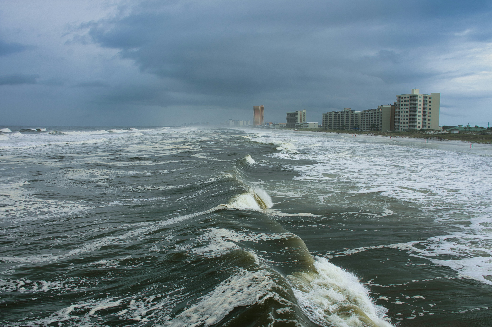
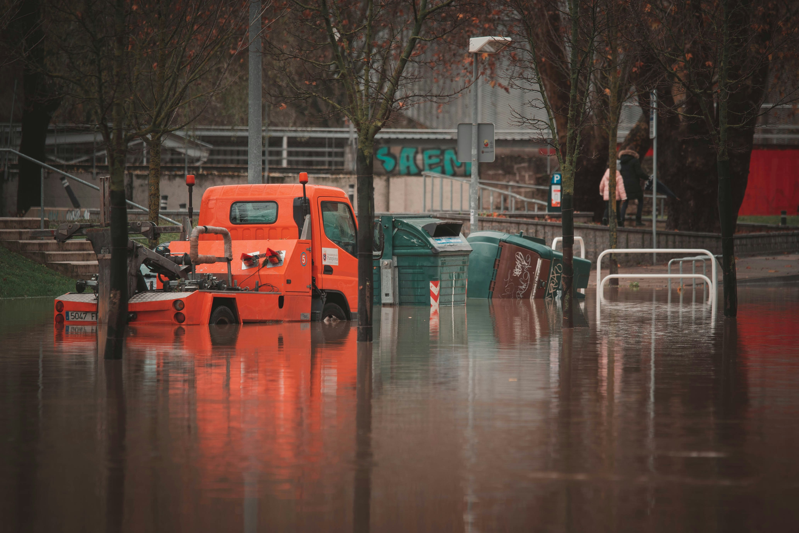
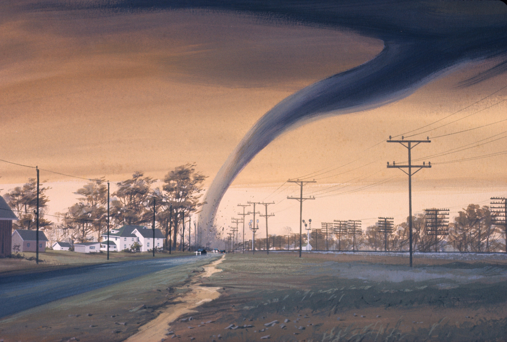
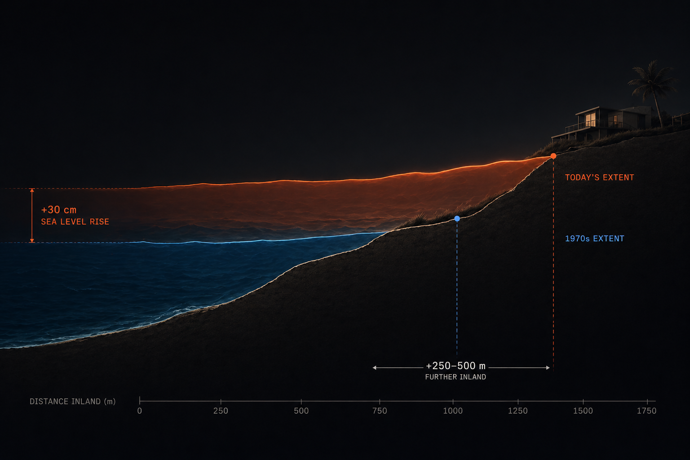
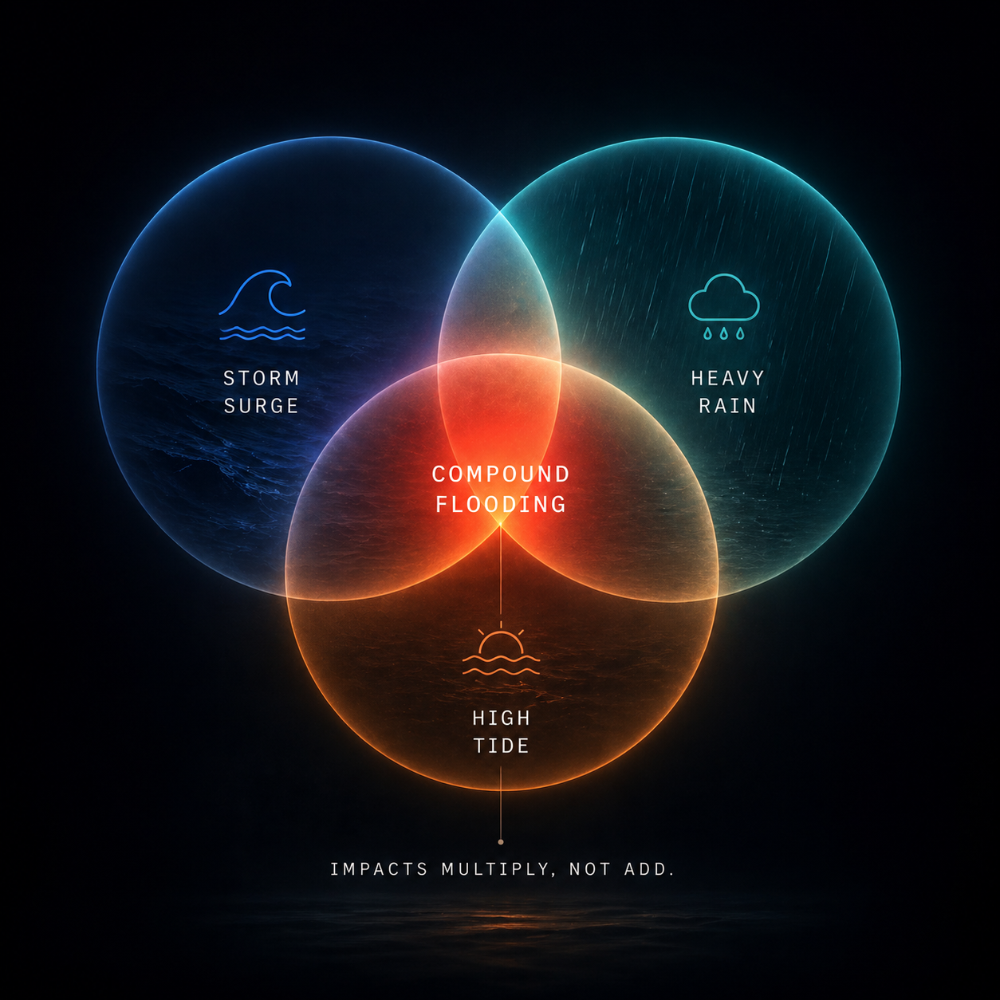
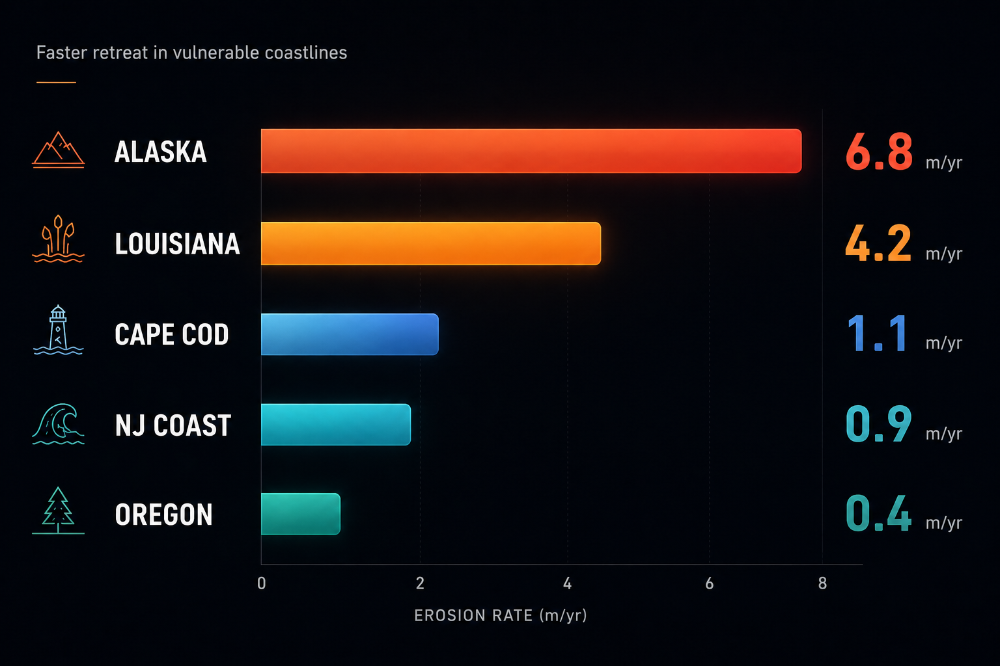
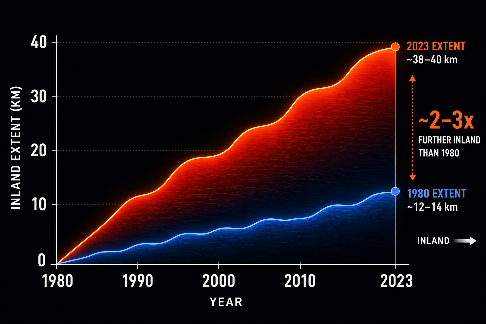

Losing the Coast
As seas rise and shorelines retreat,
risk is moving inland — but not everyone can move with it.
As seas rise and shorelines retreat,
risk is moving inland — but not everyone can move with it.
1880 – 2050 · millimeters above 1900 baseline
Source: NOAA Sea Level Trends · Church & White (2011) · CSIRO satellite altimetry
Sea level rise is not a future threat. It is a present, measurable transformation playing out across every ocean, at every shore. The chart is not a projection — it is a century of recorded data from hundreds of NOAA tide gauges worldwide.
Since the late 19th century, global mean sea level has risen roughly 21 to 24 centimeters. On a flat coastline like the Gulf of Mexico, every centimeter of vertical rise translates to a meter or more of horizontal land loss.
The rate is accelerating. Since 1993, when satellite measurement began, the pace is more than three times faster than through most of the 20th century. Thermal expansion, melting glaciers, and destabilizing ice sheets are all compounding simultaneously.
The dashed red line is not a warning. It is the present trajectory.
Under intermediate projections, U.S. sea levels could rise another 30–60 cm by 2050 — within the lifetime of most people alive today. Under high-end scenarios, the number doubles.

"The shoreline is not a place. It is a moment in time."
California coastline / Illustrative
Rising seas do not simply wet the existing shore — they rewrite it. Erosion accelerates as waves reach higher and farther. Wetlands drown when water rises faster than plants can migrate. Beaches narrow, then vanish.
Along Atlantic and Gulf coasts, barrier islands are losing 1–3 meters per year. Louisiana alone has lost more than 5,000 km² since the 1930s — an area larger than Delaware. Roads that connected towns now end at the water's edge.
Sandy beaches become mudflats. Salt marshes become open bays. The transformation is slow enough to be invisible day to day, and fast enough to be catastrophic over a decade.
The border between sea and land is a moving, contested line — and it is moving in only one direction.
Composite U.S. Atlantic / Gulf coast · meters from 1930 baseline
Source: NOAA / USGS Coastal Change · Louisiana CPRA
High-tide flooding — "sunny day flooding" — now routinely inundates coastal streets without any hurricane or heavy rain. The tide simply rises above the land. In Norfolk, Annapolis, and Miami Beach it is already a near-daily disruption months each year.


U.S. coastal monitoring stations · 1960 – 2023 · Click bars to explore
Source: NOAA High Tide Flooding Annual Report, 2023

A higher sea-level baseline acts as a launch ramp for every coastal hazard. Storm surge pushes deeper. Floodwaters sit longer. Erosion accelerates. Familiar dangers reach communities that once felt safe.

Higher baseline means surge reaches meters further inland. Each centimeter of sea level rise translates to additional horizontal inundation on flat coastal terrain — turning a minor event into a major flood.

When surge, heavy rain, and high tide coincide, the combined impact vastly exceeds any single driver. As sea levels rise, the overlap window grows — making compound events far more probable and severe.

Wave energy increases with higher sea levels, accelerating breakdown of bluffs and beaches. Sediment replenishment no longer keeps pace. Barrier islands that once protected inland communities are being consumed.

Rising seas push saline water into freshwater aquifers and rivers. Drinking water sources are contaminated. Agricultural soils become too saline to farm. Damage progresses invisibly until it is irreversible.
Source: NOAA Storm Events Database · FEMA National Risk Index · EM-DAT International Disaster Database
Flood risk score vs. economic output · Bubble size = population · Hover to explore
Source: U.S. Census · BEA County GDP · FEMA NRI, 2023
Coastal counties hold just 10% of U.S. land, yet contain more than 40% of the population and generate a disproportionate share of national economic output. These are not empty beaches — they are the most inhabited, highest-value parts of the country.
The 15 largest coastal metros — from Miami to New York, Houston to Los Angeles — account for trillions in annual GDP. The infrastructure of American prosperity: ports, airports, hospitals, highways, neighborhoods — much of it sits within reach of the rising sea.
The chart shows it starkly: Miami, New Orleans, and Norfolk combine maximum flood risk with massive populations and economic output. There is no retreat option at this scale.
Despite rising awareness, population in high-flood-risk coastal areas has grown faster than the national average for two decades. People continue moving toward risk, drawn by climate, amenity, and economy.
The coast keeps growing — even as the evidence of its danger becomes impossible to ignore.
The most important variable in coastal risk is not how close you live to water. It is whether you have the means to respond when the water arrives. That capacity is structured by income, housing, age, language, and mobility — and it is profoundly unequal.

This is what the storm leaves behind. Not equally for everyone.
Hurricane aftermath, New Orleans / Library of Congress
Each dot = one U.S. coastal county · Upper-right = most exposed, least able to recover · Click to explore
Source: FEMA NRI (2023) · CDC SVI (2022) · U.S. Census ACS 2021
Each dot represents one U.S. coastal county. Horizontal axis: flood risk score from FEMA's National Risk Index. Vertical axis: social vulnerability from the CDC's SVI — a composite of poverty, housing instability, limited English, disability, and minority status.
A high SVI county already faces compounding daily barriers. When those barriers collide with frequent flooding, the results are catastrophic — and the recovery is measured in years, not weeks.
Upper-right quadrant
High risk. High vulnerability. These communities flood often and have the fewest resources to prepare, evacuate, or rebuild. For them, climate change is not a future problem.
The Gulf Coast. The Mississippi Delta. South Florida. Coastal Virginia. Highest physical risk overlaps almost exactly with lowest adaptive capacity. This is not coincidence — it reflects decades of inequitable development and systemic underinvestment.
Renters cannot retrofit. Low-income households cannot relocate. The elderly cannot navigate complex FEMA applications. When managed retreat is proposed, those most in need are last to receive help.
The flood does not choose. The safety net does.

Residents navigate flooded streets — a daily reality for many vulnerable coastal communities
Moving away from a flood-prone area costs money that most coastal residents in vulnerable communities simply do not have. A median home relocation in the United States costs between $80,000 and $150,000 — factoring in selling costs, moving expenses, and purchasing in a safer market where prices are invariably higher.
For the nearly 40% of coastal flood-zone residents who rent, the calculus is even starker. Renters have no equity to draw on, no federally subsidized buyout to access, and no control over whether their landlord rebuilds or abandons the property after flooding. They are, in many cases, the last to leave and the last to return.
Federal managed-retreat programs — primarily FEMA's Hazard Mitigation Grant Program — have historically served wealthier, whiter communities at significantly higher rates. Research has consistently found that buyouts are more likely in counties with higher incomes and lower minority populations, even after controlling for flood exposure. The communities facing the greatest risk are often the least served by the programs designed to protect them.
When the water rises, those with means leave. Those without means wait for help that may never arrive at adequate scale.
Coastal wetland marsh — a disappearing natural buffer / Illustrative
Millions of acres · A century of loss, a fragile partial recovery
Source: USFWS NWI · Dahl (1990, 2011) · Louisiana CPRA
Between the ocean and the inhabited shore, a living buffer once stood: wetlands, marshes, mangrove forests, barrier dunes. These systems absorbed storm energy, held sediment, and gave coastal communities an invisible margin of safety. Over the past century, it has been systematically destroyed.
The U.S. has lost more than 50% of its original coastal wetlands. Louisiana continues losing wetlands at roughly one football field every 100 minutes — driven by drainage, development, and now accelerating sea level rise.
A healthy marsh reduces incoming wave heights by 50–70%. When these systems disappear, storm surge meets homes and streets without interruption. Harvey, Katrina, and Sandy all inflicted amplified damage in areas where natural buffers had been removed.
Rising seas now add coastal squeeze — wetlands need to migrate landward as water rises, but development blocks that migration. Pressed between the advancing ocean and fixed infrastructure, the buffer drowns from both sides simultaneously.
The ocean advances in front. Development blocks retreat from behind. The buffer disappears.
Coastal retreat is inevitable in many places. The question is not whether change is coming. The question is who will bear its cost. The evidence is consistent, county by county: the communities with the fewest resources are being asked to absorb the greatest burden.
Sea level rise is a physical fact. The damage it causes is shaped by policy — about where to build, who gets flood insurance, where buyout programs operate, and which communities receive early warning systems.
Combining flood frequency, storm surge exposure, erosion risk, and social vulnerability · Hover for detail
Source: FEMA NRI · NOAA Sea Level Rise Viewer · CDC SVI · U.S. Census
Photography used for illustrative purposes only. All links verified April 2025.